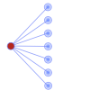
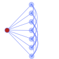
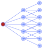
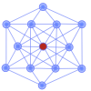
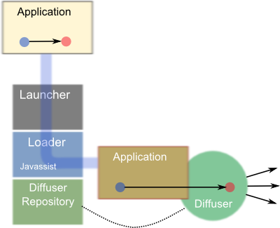
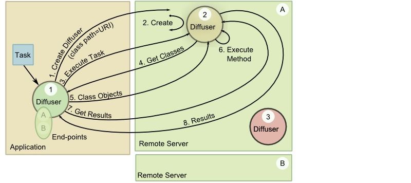
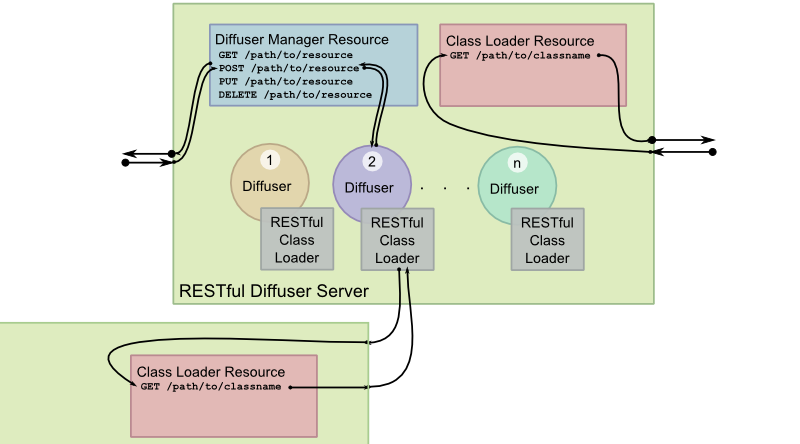

The goal of diffusive programming is make distributed computing easier--from design to development to troubleshooting to deployment. Diffusive achieves this by adhering to a set of principles designed to make the development of distributed applications more natural. Largely diffusive achieves this by making it easy to distribute any method, honoring the execution ordering defined in your code, and providing a natural load balancing mechanism by diffusing work throughout the diffuser network.
A method can be marked for remote execution. The act of marking, alone, is sufficient and necessary for a method to be executed on a remote location and have the results returned.
Definition A diffusive method is a method that has been marked.
Diffusive programming allows the execution of individual methods to be distributed. Marking a method is the act of specifying that a specific method is to be distributed. How a method is marked is up to the implementation of this principle. However, this principle does state that the act of marking a method is necessary and sufficient for the method to be distributed. This means that any method can be marked, and, therefore, executed, regardless of its name, parameters, or return type. This is a departure from many typical task-orient approaches that require the implementation of task interfaces, where the method to be executed has a defined signature (and return type).
The way a method is marked, to become a diffusive method, depends on the implementation of this principle.
For example, the reference implementation written in Java currently uses the @Diffusive annotation
to mark methods. However, it
could just as easily allow the fully qualified method names to be specified in a configuration file instead.
Code calling a diffusive method does not, and can not, know on which resource that method was executed. This helps keep code cohesive by removing distribution logic from the application.
Definition A diffuser is what executes a diffusive method.
Definition A diffused method is a diffusive method that was executed by a diffuser.
Marking a method tells the diffusive framework that that method is to be executed in a distributed manner. But it is the principle of location hiding that places the requirement that any code calling a diffusive method does not know, or need to know, where that method is executed. Removing the responsibility of knowing or having to deal with the consequences of where the method is executed relieves the calling code of any responsibility regarding distribution. And this allows the application code to remain cohesive. It also means that the same code can be called in a distributed manner, or to run completely locally with any change to the application logic.
In typical distributed systems, the distribution logic must be called directly from the application code. This may occur by calling low level application programming interfaces (API) such as in MPI, or writing task classes that implement interfaces defined by the distribution framework, and then modifying application code to deliver these tasks to the middleware.
Location hiding allows code to be endowed with its execution logic, and that execution logic is then automatically mirrored, but in a distributed manner, simply by marking the method(s). When this is coupled with the next principle, generic computation, we have a powerful and simple mechanism to distribute computation.
A diffuser will attempt to recover from a diffusive failure. If the diffuser is unable to recover, it will transfer error handling to a specified handler or report the error as a local error.
Definition A diffusive failure is a the failure of a remote diffuser to execute a diffusive method, or the loss of connectivity to a remote diffuser.
A task that is called and executed completely within a local address space (for example, code running entirely in one process). may fail to return a result. The failure may occur because an input or logic error, and in this case, it may be possible to trap and handle the error condition. In other cases, the failure may occur because of an unanticipated bug or because the server crashed. Under these conditions it may not be possible to trap and handle the error condition, and the entire application may crash or become unresponsive. In both scenarios, however, the fact that there was a failure is known because it due to either the code trapping the error, or the user because the application crashed.
The situation may be quite different when a task is called from one address space and executed in another. For example, suppose the application-attached diffuser diffuses a method to a remote diffuser. Now suppose further that the task fails to execute because of an input or logic error. If the remote diffuser traps the error, it could return an error condition which is return, and again trapped by the application-attached diffuser, and handled as in the non-distributed case. However, suppose instead that the input or logic error isn't trapped, or if there is a bug that causes the task to crash, or if the server crashes, or if the network connection goes down. In this case, the application-attached diffuser waits for the result, but doesn't receive one. Yet, the application-attached diffuser doesn't know if the task is still executing, or if there was a failure.
The best efforts failure resolution principle requires that the application doesn't see a difference between a purely local and a distributed failure. The diffuser making the request is expected to perform its best to recover from a diffusive failure, and if it can't, then it reports the error. For example, diffusers could provide a status service that responds if the diffuser is running and accessible. If the requesting diffuser finds that the status of the remote server is down, then it diffuses the method to a different diffuser. It may attempt to send the task to a different diffuser a configured-number of times before giving up and reporting an error.
Any diffusive method can be executed by any diffuser. A diffuser need not be configured with resources prior to the request to execute a method.
The principle of generic computation provides that any method can be executed on a diffuser without out the need to deploy the resource needed to execute that diffused method. Simply put, the shared object libraries or classes don't need to be deployed to the remote server prior to making the request. Each diffuser must contain a mechanism for providing resources to remote locations and for loading resources from a remote location.
In typical distributed computing, required resources must be deployed to the remote servers prior to requesting remote execution of a specific task. Diffusive programming removes this restriction by requiring that the mechanism which distributes the method execution also provides a capability to deliver the required resources to execute the method.
Note that, however, this does not prevent users from deploying resources to a common location from which they can be obtained at run-time. Under certain deployment scenarios, it may be desirable to have such a common location to provide a centralized control over the versions. But even in this case, the resources need only be deployed to the one common area.
A diffuser is responsible for executing any diffusive method, and it is also responsible for diffusing methods to other diffusers. This implies that a diffuser must be able to act both as a client and and as a server.
The principle of indistinguishability means that a diffuser must be able to receive requests to execute, and at the same time be able to diffuse (forward) those requests to another diffuser. In other words, there isn't such a thing as a client diffuser and a server diffuser: they are one and the same.
The generic computation principle alluded to this principle of indistinguishability. The generic computation principle states that a diffuser must be able to load resources from a remote diffusers, and at the same time must be able to provide resources to a remote diffuser.
Diffusers can be connected in any topology that can represented as a directed graph. Each node in the directed graph represents a diffuser. Each directed edge represents a connection from one diffuser to another. The direction of the edge represents the direction of the diffusion. And, each diffuser may contains connections to a set of other diffusers.
Definition A diffuser network is a set of connected diffusers.
Definition Suppose we have two diffusers, A and B. We say that B is an end-point of A, if A diffuses methods to B.
The open topology principle, coupled with the indistinguishability principle, requires that it is possible to create networks of diffusers, called diffuser networks, in any topology that can be represented as a directed graph. Each node in the directed graph represents a diffuser, and each (directed) edge connects that diffuser to an end-point, which is another diffuser. Any network that can be represented by a directed graph can be constructed.
This principle allows the construction of networks tailored to solve specific or general problems, networks that can naturally learn/discover an optimal configuration for performing certain types of tasks, or networks that contain sufficient redundancy to provide execution within required timelines. The diffusion patterns section, describes a few possible network topologies (patterns) that are designed to solve specific problems.
The open topology principle gives rise to the notion of diffusive patterns. Diffusers can be connected together as a network where each diffuser executes or forwards work. The topology of a diffuser network and the strategies used for determining how work is distributed form a diffusion pattern. Diffusion patterns provide templates that can be used to solve various types of problems.

Many distributed computing tasks can simply be split up into independent units of work, sent out to a compute node, and have the results processed in the application. In such cases, a simple single-layered diffuser pattern may suffice.
In the single-layered pattern is the application-attached diffuser is connected to a set of remote diffusers. The remote diffusers only execute code, but do not forward work, even if their load is high, or even if they make a call to another diffusive method.

A variation of this pattern that provides a natural load balancing mechanism is to connect the each remote diffuser to one or more of the other remote diffusers. In this case, when a diffuser has a high load it can forward it to another diffuser, which can execute the work or forward the work again.
In these

A natural extension of the single-layered diffuser pattern is a multi-layered diffuser pattern. Applications that perform nested diffusion--a diffused method calling other diffused methods--benefit from this type of topology.
Nested diffusion is a natural consequence for problems where individual tasks are distributed can be represented in a hierarchical pattern. For example if you have groups of tasks that return results to the application for further, and potentially complex processing, causing the application to become a bottleneck. In these cases, you can distribute individual groups of work to the "first layer" of remote nodes. These remote nodes then distribute individual tasks to a "second layer" of remote nodes. When the nodes in the "second layer" complete their tasks, the nodes in the "first layer" process the results and return them to the application. In this way, the application is no longer the bottleneck.
In distributed computing it is not uncommon that a task fails to complete. A compute node may have crashed or lost network connectivity with the collective. Or some mysterious set of events placed the execution of the task in an unusual, never-to-be-repeated-until-a-demo state that prevented its completion. In cases where the completion of each individual task is required to occur at least once in a given time period, we can send redundant tasks to different compute nodes, and use the first result from each individual task to come back.
Diffusive can be configured to send redundant tasks.

The connected pattern provides a general purpose diffuser network that makes a flexible topology available on which applications can diffuse work. Having all--or most--diffusers connected to each other, provides natural load balancing, allows nested diffusion, and recursive diffusion.
The connected pattern provides a general purpose diffuser network providing a flexible topology on
which applications can diffuse work. Implicit in this pattern is that the Strategy used
to diffuse work chooses remote diffusers with fixed probabilities. But since hardware may differ
across the diffuser network, these probabilities can be adjusted to send work to more capable
hardware with higher probability.
In cases where similar types of processes are run repeatedly, these probabilities can be adjusted through an algorithm that sets the probabilities such that the overall execution time is minimized.
Distributed recursive algorithms are quite straightforward to implement in diffusive. As
in "normal" recursion, a method can call itself. When the method is a diffusive method
(i.e. a method marked with @Diffusive) it will diffuse that method call
forward to a remote diffuser. In this case, the diffuser network topology should allow
deep recursion, which means setting up loops.
The Diffusive reference implementation is a Java-based framework that implements the diffusive
principles. Aspects of Diffusive are specific to its implementation, and could be implemented in other ways.
For example, in Diffusive methods are marked through the use of annotations. In particular, a
diffusive method is annotated with @Diffusive. However, it would have been possible to allow
methods to be marked through a configuration file that holds a list of markers represented by their
fully qualified method names. (For example, the fully qualified method name could be represented by the
fully qualified class name with the method name appended with a ".", such as
org.myapp.calc.PriceCalc.calculate.). These aspects only change the specifics of how a
diffusive framework implements the principles, but not how it behaves.
In the next sections I discuss how Diffusive framework implements the five diffusive principles.
The diffusive principle, marking, requires that a method is somehow identified as a diffusive method. It further requires that marking a method is both sufficient and necessary for a method to be diffused. The location hiding principle takes it a step further by requiring that any application method calling a diffusive (marked) method does not, and can not, know where that method is being executed.
Diffusive accomplishes this through a combination of annotations and load-time byte-code engineering.
The annotations are simple: any method that is to be diffused is annotated with @Diffusive. This signals
the class-loader that any calls to this method should be replaced with a call to a pre-configured diffuser. In this way, the
marked method calls get handed to the diffuser, along with the methods parameter types and values, then name of the class in
which the method resides, and the method's return type. To accomplish this Diffusive uses the byte-code
engineering framework Javassist. (Some have pointed out that another
approach would have been to use aspect-oriented programming frameworks such as AspectJ. However, the compact
Javassist framework provides everything Diffusive needs.)
In order to replace marked methods during class-loading, the application classes must be loaded through the diffusive
class loader (DiffusiveLoader). This is accomplished by using an application launcher, called the
diffusive launcher (DiffusiveLauncher). The diffusive launcher accepts the name of the application's
Java class, creates a diffusive class loader, and asks it to run the application. The diffusive loader reads the
configuration items, sets up the application-attached diffuser to which marked method calls are diverted, and determines
whether a class is loaded by the application's class loader and which are passed to the Javassist
Loader.

The above figure illustrates launching an application in Diffusive.
At the top of the figure is a box labeled "Application" which represents the unadulterated application. The light
blue dot in that box represents a method call to the red dot. The red dot represents a marked method. The
application passes through the launcher and into the loader. The DiffusiveLoader sets up the
repository holding the default diffuser, reads the configuration items, creates an application-attached diffuser,
and hands the application to the Javassist Loader to instrument the application. The tan box labeled
"Application" in the lower-right hand side of the figure represents the instrumented, or modified, application.
Notice that now, all the method calls to the marked method are diverted to the application-attached
diffuser, which contains the required mechanism to execute that method. It is the application-attached diffuser, the
green circle on the bottom left-hand side of the figure, that is responsible for distributing the method execution.
It is important to point out that the original application code is untouched.
The application-attached diffuser is responsible for distributing method calls to other diffusers, or
depending on its configuration and load, executing the method itself. By default Diffusive uses a
RESTful diffuser (RestfulDiffuser) that adheres to the JSR-311
standard, and uses the Apache Jersey implementation. Although Diffusive
uses a RESTful diffuser by default, any diffuser implementation can be used to provide the required functionality.
In fact, Diffusive also comes with a local diffuser that runs the code locally. (Using Diffusive's local
diffuser directly is inefficient. Unless you are using the local diffuser for testing the diffusive framework through a
local debugger, using the local diffuser directly means that you aren't diffusing the code. In which case, it doesn't
make sense to use Diffusive in the first place. The local diffuser only exists because it is used by the RESTful
diffuser when it executes a method locally rather than distribute it.)
The RESTful diffuser must be configured with a set of end-points to which it can diffuse method execution.
These end-points, themselves, must contain a RESTful diffuser. And the access to the diffuser must be accomplished
through a some sort of a software server. Diffusive provides a RESTful diffuser server
(RestfulDiffuserServer) that contains an Apache Grizzly
web server configured to interact with a JAX-RS.
web resource (RestfulDiffuserManagerResource).
Within the context of the RESTful diffuser server, there is one RESTful diffuser for each diffusive method. In other
words, each unique diffusive method signature has its own diffuser, accessible via the web resource
(RestfulDiffuserManagerResource) through its uniform resource identifier (URI). Recall that a diffusive
method signature contains the name of the containing class, the method name, the method's formal argument types, and the
return type. This is different from a Java signature, which contains only the method name and the formal argument types.
The web resource manages the creation, querying, calling, and deletion of its diffusers by responding to requests from the calling diffuser. And
each diffuser is a resource with a unique address. For example, a new diffuser is created through an HTTP POST
call containing the required information about the diffusive method signature. Obtaining information about a diffuser is
accomplished through an HTTP GET call to its URI. To execute a method, an HTTP POST is called on the URI
of the diffuser, passing along the information needed to execute the method. The execute method returns an ID (link) to
the results resource, in line with the approach of hypermedia as the engine of application state (HATEOAS). The result can then be obtained
through an HTTP GET call to the URI of that result, which blocks until the result is complete. Alternatively,
the status of the result can be obtained through an HTTP HEAD call to the URI of the result, which is non-blocking,
and returns an empty response if the result resource is not yet available. And, finally, a diffuser can be deleted through
an HTTP DELETE call to its URI.
To facilitate development, Diffusive provides a RESTful client (RestfulDiffuserManagerClient)
that takes care of the underlining communication, serializing/deserializing, creating requests, and parsing responses. This
client allows developers to deal only with Java objects.
Diffusers decide how to distribute the method calls based on a strategy (Strategy). A
Strategy simply returns a list of end-points when requested. In most cases, the list returned
by the Strategy contains only one element. However, to allow for redundant diffuser networks,
the Strategy interface allows the return of a list of end-points. Strategy
implementations can take into account various aspects that affect the optimal distribution of method calls. For
example, a Strategy implementation may take into account the load on its server, the number of
diffusers executing, the number of threads available for execution, and weighting factors for individual end-points.
In order to execute a method remotely, the remote execution environment needs certain information. Specifically, the execution environment needs:
To transfer that information to the remote diffuser, across the network, they must be serialized. Likewise, once execution is completed, the return object must be serialized and returned to the original diffuser.
When the remote execution environment receives these serialized objects, it must reconstruction them as Java objects.
And to reconstruct serialized objects requires Java Class objects corresponding each of the
serialized objects. The Class objects are effectively the templates used to reconstruct an object.
In the section on generic computation, we discuss how the remote environment gets
access to these Class objects without the need to deploy them prior to execution.
Diffusive provides an interface, Serializer, that defines what a serializer must
provide to Diffusive. Two key serialization implementations have been wrapped to conform to the
Serializer interface: ObjectSerializer and
PersistenceSerializer. The ObjectSerializer is Java's own serialization
framework which requires that classes implement the Serializable interface. Using this
serialization framework requires altering existing classes, that are to be serialized, if they don't implement
Serializable. In some cases this may be acceptable. In other cases it may not be possible.
The PersistenceSerializer wraps the FreezeDry
persistence framework. FreezeDry does not require any classes to implement a FreezeDry-specific interface.
In fact, FreezeDry can take any existing class (even those without no-arg constructors) and serialize them into XML,
JSON, or key-value pairs. However, if the class is too complex, it may require some coding.
The Diffusive reference implementation uses the concept of a Strategy to determine
to which diffuser a method is diffused. The current Strategy interface requires that a
Strategy return a list of end-points to which the method can be diffused. An implementation of
best-efforts failure resolution can be achieved by creating a RESTful diffuser that diffuses its method to the first
end-point in the list, and if that fails to the next end-point, until the task completes, or until the diffuser runs
out of end-points.
The Generic Computation principle requires two that two conditions are met: that any method can be diffused; and, prior deployment of resources is not required. The first condition is met because of the Marking principle---any marked method can be diffused. The second condition is the focus of this section.
As discussed in serialization section, in order to transport objects across the network they must be serialized. This means that to execute a diffusive method remotely requires that the following objects must be serialized:
Once these serialized objects are received by the remote diffuser, it needs to deserialize them back into objects.
To deserialize any object requires that the class loader has loaded a Class object corresponding
to that object (and any objects that object references). Usually, this is handled by deploying the class files
(as jar or war files) to the remote servers executing the methods, and configuring their class paths to contain their
location.
The Generic Computation principle states that deployment of resources to the remote nodes does not need
to occur before requesting the remote diffuser to execute a method. In practical terms, this principle
requires that the remote diffuser contains a mechanism for loading classes from a remote source, and that a mechanism
exists, preferably on the application-attached diffuser, that can provide serialized Class objects
to the remote diffuser.
Diffusive provides a RESTful class loader (RestfulClassLoader) that can load classes
from a corresponding RESTful web service. The RestfulClassPathResource is a (JSR-311) web resource,
attached to the web service, that provides serialized Class objects to the requesting client (i.e. the
RestfulClassLoader).

The above figure shows the process of creating, configuring, and executing a task using
Diffusive. In this figure, the application requests that its application-attached diffuser, which
is labeled as Diffuser 1 in the figure, execute the task labeled Task. In this scenario,
Diffuser 1 decides to diffuse the task to one of its end-points, Remote Server A. If the remote server
doesn't contain a diffuser that matches the diffusive method signature of Task, then, as shown in
step 1 of the above figure, Diffuser 1 requests that Remote Server A create a diffuser
with that signature, which is shown as Diffuser 2. In order to execute Task,
Diffuser 2 needs to load the Class objects associated with Task.
And because Diffuser 1 has those Class objects, it passes the URI corresponding to the
web service that can provide those Class objects, along with its request to create
Diffuser 2.
As shown in step 2 of the above figure, Remote Server A then creates Diffuser 2
and configures it with the class path information and other configuration items, and returns URI to Diffuser 2,
the newly created diffuser. Diffuser 1 now requests that Diffuser 2 execute Task
(step 3). As part of that request, Diffuser 1 passes all the required serialized object along with the execute
request. Diffuser 2 receives that request, tries to deserialize the objects, but can't because it doesn't have
access to the Class objects associated with Task. And so Diffuser 2
initiates a call back to the class path URI requesting the Class objects (step 4).
Diffuser 1 sends the serialized Class objects requested back to Diffuser 2
(step 5), and Diffuser 2 loads the Class objects, which enables it to deserialized the
objects associated with Task. Now Diffuser 2 is set up to execute the Task, w
hich it does (step 6), and returns a result ID. The result ID is a URI to the result. When Diffuser 1 receives
the result ID, it requests the result (step 7), which is a blocking call, and waits for the result response (step 8).
When Diffuser 1 receives the results, it deserialized the result object and returns it the application (again,
this is automatic through Javassist).
There are a few noteworthy points.
In Diffusive all diffusers of a certain type are the same. And with the exception of the application-attached diffuser, all diffusers are managed the same way. The application-attached diffuser, as the name implies, is attached to the application through the diffusive launcher. Recall that the diffuser launcher is used to launch the application, and during the process of launching the application, the application is instrumented to divert calls to diffusive methods to the application-attached diffuser. It is the application-attached diffuser that diffuses (distributes) method calls to remote diffusers.

Recall that in Diffusive, a remote diffuser is managed by RESTful diffuser server. A RESTful diffuser
servers (RestfulDiffuserServer) act as servers to which methods can be diffused. The RESTful
diffuser servers also act as clients when diffusing methods to other remote diffusers, or when other diffusers
request Class objects from their class path. And therefore, all remote diffusers look alike.
The above figure shows the basic elements contained in a RESTful diffuser
server and depicts a typical interaction. In this scenario, the RestfulDiffuserServer receives
a request to execute a method (task). The RestfulDiffuserServer, a web server, forwards the
request to the web resource, RestfulDiffuserManagerResource, (A JSR-311 web resource)
which is bound to its execute(...) method. The execute method looks up the appropriate diffuser
based on the diffuser method signature, which is part of the its URI, returns a response containing the result ID
(a URI to the result resource) and then forwards the method to that diffuser.
Each RESTful diffuser contains a RestfulClassLoader which loads a class using a RESTful web
service. The RestfulClassLoader acts as a client to the RestfulClassPathResource,
which serializes the request Class object and returns it. The RESTful class loader then
deserializes the Class object and loads it. Notice that each RestfulDiffuserServer
contains the RestfulClassPathResource.
At this point, the diffuser can execute the method and return the result to the
RestfulDiffuserManagerResource.
Each diffuser contains a list of end-points to which it can diffuse code, a list of class paths from which it can
load Class objects, a Strategy which determines how the end-points for
executing the next task are selected, and a RESTful class loader to load class over the network. It is the fact that
each diffuser server looks the same that makes each diffuser server a building block from which to construct arbitrary
diffuser networks---as long as they can be represented by a directed graph.
The current reference implementation is a work in progress. The main goal for creating a reference implementation was to prove that the concepts of \emph{diffusive programming} could be implemented, with an eye toward building a robust, secure, and accessible implementation. Given that, there are a number of items that need further exploration and development.